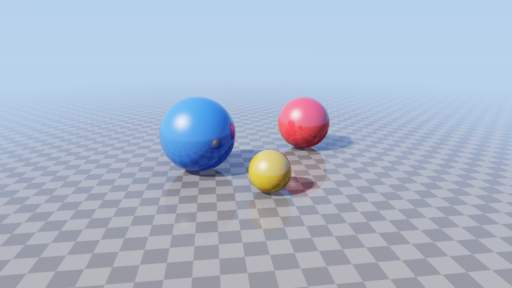

Ray Tracing
In this tutorial, you'll build a real-time ray tracer using hardware-accelerated ray tracing. The scene features three colored spheres on a checkerboard floor with an animated orbiting camera, soft shadows, reflections, and ACES tone mapping — all driven by a compute shader using RayQuery.
Note
This tutorial requires a GPU with ray tracing support (e.g., NVIDIA RTX, AMD RDNA 2+, or Apple M1+).
Overview
This tutorial covers:
- Building Bottom-Level and Top-Level Acceleration Structures (BLAS/TLAS)
- Using triangle geometry for the floor and procedural AABBs for spheres
- Tracing rays with
RayQueryin a compute shader - Implementing soft shadows, reflections, and Fresnel effects
- Applying ACES tone mapping for cinematic color grading
- Dynamically resizing the output texture on window resize
Key Concepts
Acceleration Structure Hierarchy
Ray tracing uses a two-level acceleration structure:
| Level | Purpose | Content |
|---|---|---|
| BLAS (Bottom-Level) | Geometry containers | Triangle meshes or procedural AABBs |
| TLAS (Top-Level) | Scene graph | References to BLAS instances with transforms |
This tutorial builds two BLAS:
- Floor BLAS: A triangle mesh (2 triangles forming a 100×100 quad)
- Sphere BLAS: 3 procedural AABBs (bounding boxes for sphere intersection)
Both are combined into one TLAS for the scene.
RayQuery
Instead of using a dedicated ray tracing pipeline, Zenith.NET uses RayQuery in compute shaders. This inline approach traces rays within any shader stage:
RayQuery<RAY_FLAG_NONE> query;
query.TraceRayInline(scene, RAY_FLAG_NONE, 0xFF, ray);
while (query.Proceed())
{
// Handle procedural intersections
}
if (query.CommittedStatus() == COMMITTED_TRIANGLE_HIT)
{
// Handle triangle hit
}
The Renderer Class
Create the file Renderers/RayTracingRenderer.cs:
namespace ZenithTutorials.Renderers;
internal unsafe class RayTracingRenderer : IRenderer
{
private const uint ThreadGroupSize = 16;
private const string ShaderSource = """
static const float RayEpsilon = 0.001;
static const float TwoPi = 6.2831853;
static const uint SphereCount = 3;
static const uint ShadowSamples = 6;
static const uint ReflectionSamples = 4;
static const float ShadowMin = 0.3;
static const float SunRadius = 0.04;
static const float SphereRoughness = 0.05;
static const float SphereF0 = 0.15;
static const float FloorFadeStart = 8.0;
static const float FloorFadeRange = 20.0;
static const float3 FloorNormal = float3(0.0, 1.0, 0.0);
static const float3 LightDir = float3(0.6667, 0.6667, -0.3333);
static const float3 LightColor = float3(1.0, 0.98, 0.95);
static const float3 AmbientColor = float3(0.15, 0.15, 0.2);
struct Constants
{
private float4 PositionAndPadding;
property float3 Position
{
get {
return PositionAndPadding.xyz;
}
}
};
struct Sphere
{
private float4 CenterAndRadius;
private float4 ColorAndPadding;
property float3 Center
{
get {
return CenterAndRadius.xyz;
}
}
property float Radius
{
get {
return CenterAndRadius.w;
}
}
property float3 Color
{
get {
return ColorAndPadding.xyz;
}
}
};
RaytracingAccelerationStructure scene;
ConstantBuffer<Constants> constants;
StructuredBuffer<Sphere> spheres;
RWTexture2D<float4> outputTexture;
float3 SampleSky(float3 direction)
{
float t = 0.5 * (direction.y + 1.0);
float3 horizon = float3(0.7, 0.85, 1.0);
float3 zenith = float3(0.3, 0.5, 1.0);
float3 sky = lerp(horizon, zenith, saturate(t));
float sunDot = dot(direction, LightDir);
sky += LightColor * smoothstep(0.995, 0.999, sunDot) * 3.0;
return sky;
}
float3 ACESFilm(float3 x)
{
x *= 1.6;
float3 a = x * (x * 2.51 + 0.03);
float3 b = x * (x * 2.43 + 0.59) + 0.14;
float3 result = saturate(a / b);
float luma = dot(result, float3(0.2126, 0.7152, 0.0722));
result = saturate(lerp(float3(luma, luma, luma), result, 1.5));
return result;
}
float SchlickFresnel(float cosTheta, float f0)
{
return f0 + (1.0 - f0) * pow(1.0 - cosTheta, 5.0);
}
float3 ShadeCheckerboard(float3 hitPoint, float3 normal, float3 rayDirection, bool softShadow, out float shadow)
{
float2 fw = max(abs(fwidth_approx(hitPoint.xz)), 0.001);
float2 fractPos = fract(hitPoint.xz) - 0.5;
float2 filtered = clamp(fractPos / fw, -0.5, 0.5);
float checker = 0.5 - 0.5 * filtered.x * filtered.y;
float3 baseColor = lerp(float3(0.787, 0.787, 0.787), float3(0.1, 0.1, 0.1), checker);
float NdotL = max(dot(normal, LightDir), 0.0);
float3 shadowOrigin = hitPoint + normal * RayEpsilon;
shadow = softShadow ? lerp(ShadowMin, 1.0, TraceSoftShadow(shadowOrigin, LightDir, hitPoint.xz * 100.0)) :
(TraceShadowRay(shadowOrigin, LightDir) ? ShadowMin : 1.0);
float3 litColor = baseColor * AmbientColor + baseColor * LightColor * NdotL * shadow;
float ao = 1.0;
for (uint i = 0; i < SphereCount; i++)
{
float3 toSphere = spheres[i].Center - hitPoint;
float horizDist = length(toSphere.xz);
float r = spheres[i].Radius;
float occl = saturate(1.0 - horizDist / (r * 2.0));
float hFactor = saturate(1.0 - toSphere.y / (r * 3.0));
ao -= occl * hFactor * 0.4;
}
litColor *= max(ao, 0.3);
float dist = length(hitPoint.xz);
float fade = saturate((dist - FloorFadeStart) / FloorFadeRange);
return lerp(litColor, SampleSky(rayDirection), fade);
}
float3 ShadeSphere(float3 hitPoint, float3 normal, float3 sphereColor, float3 viewDir, bool softShadow)
{
float NdotL = max(dot(normal, LightDir), 0.0);
float3 halfDir = normalize(LightDir + viewDir);
float spec = pow(max(dot(normal, halfDir), 0.0), 64.0);
float3 shadowOrigin = hitPoint + normal * RayEpsilon;
float shadow = softShadow ? lerp(ShadowMin, 1.0, TraceSoftShadow(shadowOrigin, LightDir, hitPoint.xz * 100.0)) :
(TraceShadowRay(shadowOrigin, LightDir) ? ShadowMin : 1.0);
float3 diffuse = sphereColor * LightColor * NdotL * shadow;
float3 specular = LightColor * spec * shadow;
float3 ambient = sphereColor * AmbientColor;
return ambient + diffuse + specular;
}
float3 TraceReflection(float3 origin, float3 direction)
{
RayDesc reflectRay;
reflectRay.Origin = origin;
reflectRay.Direction = direction;
reflectRay.TMin = RayEpsilon;
reflectRay.TMax = 1000.0;
float3 sphereNormal = float3(0.0);
float3 sphereColor = float3(0.0);
RayQuery<RAY_FLAG_NONE> query;
query.TraceRayInline(scene, RAY_FLAG_NONE, 0xFF, reflectRay);
while (query.Proceed())
{
if (query.CandidateType() == CANDIDATE_PROCEDURAL_PRIMITIVE)
{
uint sphereIndex = query.CandidatePrimitiveIndex();
Sphere sphere = spheres[sphereIndex];
float3 ro = query.CandidateObjectRayOrigin();
float3 rd = query.CandidateObjectRayDirection();
float t = IntersectSphere(ro, rd, sphere);
if (t >= query.RayTMin() && t <= query.CommittedRayT())
{
float3 hitPoint = ro + rd * t;
sphereNormal = normalize(hitPoint - sphere.Center);
sphereColor = sphere.Color;
query.CommitProceduralPrimitiveHit(t);
}
}
}
if (query.CommittedStatus() == COMMITTED_TRIANGLE_HIT)
{
float3 hitPoint = reflectRay.Origin + reflectRay.Direction * query.CommittedRayT();
float unused;
return ShadeCheckerboard(hitPoint, FloorNormal, reflectRay.Direction, false, unused);
}
else if (query.CommittedStatus() == COMMITTED_PROCEDURAL_PRIMITIVE_HIT)
{
float3 hitPoint = reflectRay.Origin + reflectRay.Direction * query.CommittedRayT();
float3 viewDir = normalize(origin - hitPoint);
return ShadeSphere(hitPoint, sphereNormal, sphereColor, viewDir, false);
}
else
{
return SampleSky(direction);
}
}
float IntersectSphere(float3 origin, float3 direction, Sphere sphere)
{
float3 oc = origin - sphere.Center;
float b = dot(oc, direction);
float c = dot(oc, oc) - sphere.Radius * sphere.Radius;
float discriminant = b * b - c;
if (discriminant > 0.0)
{
float sqrtD = sqrt(discriminant);
float t1 = -b - sqrtD;
if (t1 > 0.0)
{
return t1;
}
float t2 = -b + sqrtD;
if (t2 > 0.0)
{
return t2;
}
}
return -1.0;
}
float2 fwidth_approx(float2 p)
{
float2 dx = float2(0.02, 0.0);
float2 dy = float2(0.0, 0.02);
return abs(fract(p + dx) - fract(p)) + abs(fract(p + dy) - fract(p));
}
float Hash(float2 p)
{
float3 p3 = fract(float3(p.xyx) * 0.1031);
p3 += dot(p3, p3.yzx + 33.33);
return fract((p3.x + p3.y) * p3.z);
}
bool TraceShadowRay(float3 origin, float3 direction)
{
RayDesc shadowRay;
shadowRay.Origin = origin;
shadowRay.Direction = direction;
shadowRay.TMin = RayEpsilon;
shadowRay.TMax = 1000.0;
RayQuery<RAY_FLAG_ACCEPT_FIRST_HIT_AND_END_SEARCH> shadowQuery;
shadowQuery.TraceRayInline(scene, RAY_FLAG_NONE, 0xFF, shadowRay);
while (shadowQuery.Proceed())
{
if (shadowQuery.CandidateType() == CANDIDATE_PROCEDURAL_PRIMITIVE)
{
uint sphereIndex = shadowQuery.CandidatePrimitiveIndex();
Sphere sphere = spheres[sphereIndex];
float3 ro = shadowQuery.CandidateObjectRayOrigin();
float3 rd = shadowQuery.CandidateObjectRayDirection();
float t = IntersectSphere(ro, rd, sphere);
if (t >= shadowQuery.RayTMin() && t <= shadowQuery.CommittedRayT())
{
shadowQuery.CommitProceduralPrimitiveHit(t);
}
}
}
return shadowQuery.CommittedStatus() != COMMITTED_NOTHING;
}
float TraceSoftShadow(float3 origin, float3 direction, float2 pixelSeed)
{
float3 tangent = normalize(cross(direction, float3(0.0, 1.0, 0.0)));
float3 bitangent = cross(direction, tangent);
float lit = 0.0;
for (uint i = 0; i < ShadowSamples; i++)
{
float h = Hash(pixelSeed + float2(float(i) * 7.13, float(i) * 3.71));
float angle = (float(i) + h) * (TwoPi / float(ShadowSamples));
float radius = sqrt(Hash(pixelSeed + float2(float(i) * 11.07, 0.0))) * SunRadius;
float3 jitteredDir = normalize(direction + tangent * cos(angle) * radius + bitangent * sin(angle) * radius);
if (!TraceShadowRay(origin, jitteredDir))
{
lit += 1.0;
}
}
return lit / float(ShadowSamples);
}
float3 TraceRoughReflection(float3 origin, float3 reflectDir, float3 normal, float roughness, float2 pixelSeed)
{
float3 tangent = normalize(cross(reflectDir, normal));
float3 bitangent = cross(reflectDir, tangent);
float3 accum = float3(0.0);
for (uint i = 0; i < ReflectionSamples; i++)
{
float h1 = Hash(pixelSeed + float2(float(i) * 5.17, float(i) * 9.23));
float h2 = Hash(pixelSeed + float2(float(i) * 13.37, float(i) * 2.91));
float angle = h1 * TwoPi;
float radius = sqrt(h2) * roughness;
float3 jitteredDir = normalize(reflectDir + tangent * cos(angle) * radius + bitangent * sin(angle) * radius);
accum += TraceReflection(origin, jitteredDir);
}
return accum / float(ReflectionSamples);
}
float3 ShadeFloor(float3 hitPoint, float3 rayDir, float3 cameraPos)
{
float shadow;
float3 directColor = ShadeCheckerboard(hitPoint, FloorNormal, rayDir, true, shadow);
float3 viewDir = normalize(cameraPos - hitPoint);
float3 halfDir = normalize(LightDir + viewDir);
float floorSpec = pow(max(dot(FloorNormal, halfDir), 0.0), 128.0);
float specDist = length(hitPoint.xz);
float specFade = 1.0 - saturate((specDist - FloorFadeStart) / FloorFadeRange);
directColor += LightColor * floorSpec * 0.4 * specFade * shadow;
float3 reflectDir = reflect(rayDir, FloorNormal);
float3 reflectColor = TraceReflection(hitPoint + FloorNormal * RayEpsilon, reflectDir);
float fresnel = SchlickFresnel(max(dot(FloorNormal, viewDir), 0.0), 0.02);
return lerp(directColor, reflectColor, fresnel);
}
float3 ShadePrimarySphere(float3 hitPoint, float3 rayDir, float3 cameraPos, float3 normal, float3 sphereColor)
{
float3 viewDir = normalize(cameraPos - hitPoint);
float3 directColor = ShadeSphere(hitPoint, normal, sphereColor, viewDir, true);
float3 reflectDir = reflect(rayDir, normal);
float3 reflectColor = TraceRoughReflection(hitPoint + normal * RayEpsilon, reflectDir, normal, SphereRoughness, hitPoint.xz * 100.0);
float fresnel = SchlickFresnel(max(dot(normal, viewDir), 0.0), SphereF0);
return lerp(directColor, reflectColor, fresnel);
}
[numthreads(16, 16, 1)]
void CSMain(uint3 dispatchThreadID: SV_DispatchThreadID)
{
uint2 pixelCoord = dispatchThreadID.xy;
uint width, height;
outputTexture.GetDimensions(width, height);
if (pixelCoord.x >= width || pixelCoord.y >= height)
{
return;
}
float2 uv = (float2(pixelCoord) + 0.5) / float2(width, height);
float2 ndc = uv * 2.0 - 1.0;
ndc.y = -ndc.y;
float aspectRatio = float(width) / float(height);
float fov = tan(radians(45.0) * 0.5);
float3 cameraPos = constants.Position;
float3 cameraTarget = float3(0.0, 0.5, 0.0);
float3 cameraUp = float3(0.0, 1.0, 0.0);
float3 forward = normalize(cameraTarget - cameraPos);
float3 right = normalize(cross(forward, cameraUp));
float3 up = cross(right, forward);
float3 rayDir = normalize(forward + ndc.x * aspectRatio * fov * right + ndc.y * fov * up);
RayDesc ray;
ray.Origin = cameraPos;
ray.Direction = rayDir;
ray.TMin = RayEpsilon;
ray.TMax = 1000.0;
float3 sphereHitNormal = float3(0.0);
float3 sphereHitColor = float3(0.0);
RayQuery<RAY_FLAG_NONE> query;
query.TraceRayInline(scene, RAY_FLAG_NONE, 0xFF, ray);
while (query.Proceed())
{
if (query.CandidateType() == CANDIDATE_PROCEDURAL_PRIMITIVE)
{
uint sphereIndex = query.CandidatePrimitiveIndex();
Sphere sphere = spheres[sphereIndex];
float3 ro = query.CandidateObjectRayOrigin();
float3 rd = query.CandidateObjectRayDirection();
float t = IntersectSphere(ro, rd, sphere);
if (t >= query.RayTMin() && t <= query.CommittedRayT())
{
float3 hitPoint = ro + rd * t;
sphereHitNormal = normalize(hitPoint - sphere.Center);
sphereHitColor = sphere.Color;
query.CommitProceduralPrimitiveHit(t);
}
}
}
float3 color;
if (query.CommittedStatus() == COMMITTED_TRIANGLE_HIT)
{
float3 hitPoint = ray.Origin + ray.Direction * query.CommittedRayT();
color = ShadeFloor(hitPoint, rayDir, cameraPos);
}
else if (query.CommittedStatus() == COMMITTED_PROCEDURAL_PRIMITIVE_HIT)
{
float3 hitPoint = ray.Origin + ray.Direction * query.CommittedRayT();
color = ShadePrimarySphere(hitPoint, rayDir, cameraPos, sphereHitNormal, sphereHitColor);
}
else
{
color = SampleSky(rayDir);
}
color = ACESFilm(color);
outputTexture[pixelCoord] = float4(color, 1.0);
}
""";
private readonly Buffer floorVertexBuffer;
private readonly Buffer floorIndexBuffer;
private readonly Buffer aabbBuffer;
private readonly BottomLevelAccelerationStructure floorBlas;
private readonly BottomLevelAccelerationStructure sphereBlas;
private readonly TopLevelAccelerationStructure tlas;
private readonly Buffer constantsBuffer;
private readonly Buffer sphereBuffer;
private readonly ResourceLayout resourceLayout;
private readonly ComputePipeline pipeline;
private Texture? outputTexture;
private ResourceTable? resourceTable;
private float totalTime;
public RayTracingRenderer()
{
if (!App.Context.Capabilities.RayTracingSupported)
{
throw new NotSupportedException("Ray tracing is not supported on this device.");
}
Vector3[] floorVertices =
[
new(-50.0f, 0.0f, -50.0f),
new( 50.0f, 0.0f, -50.0f),
new( 50.0f, 0.0f, 50.0f),
new(-50.0f, 0.0f, 50.0f)
];
uint[] floorIndices = [0, 1, 2, 0, 2, 3];
floorVertexBuffer = App.Context.CreateBuffer(new()
{
SizeInBytes = (uint)(sizeof(Vector3) * floorVertices.Length),
StrideInBytes = (uint)sizeof(Vector3),
Flags = BufferUsageFlags.Vertex | BufferUsageFlags.AccelerationStructure
});
floorVertexBuffer.Upload(floorVertices, 0);
floorIndexBuffer = App.Context.CreateBuffer(new()
{
SizeInBytes = (uint)(sizeof(uint) * floorIndices.Length),
StrideInBytes = sizeof(uint),
Flags = BufferUsageFlags.Index | BufferUsageFlags.AccelerationStructure
});
floorIndexBuffer.Upload(floorIndices, 0);
Sphere[] spheres =
[
new() { Center = new(-2.0f, 1.0f, 1.0f), Radius = 1.0f, Color = new(0.8f, 0.2f, 0.2f) },
new() { Center = new( 2.0f, 1.2f, -1.0f), Radius = 1.2f, Color = new(0.2f, 0.4f, 0.8f) },
new() { Center = new( 0.0f, 0.6f, -3.0f), Radius = 0.6f, Color = new(0.9f, 0.7f, 0.2f) }
];
Vector3[] aabbs = new Vector3[spheres.Length * 2];
for (int i = 0; i < spheres.Length; i++)
{
aabbs[i * 2] = spheres[i].Center - new Vector3(spheres[i].Radius);
aabbs[(i * 2) + 1] = spheres[i].Center + new Vector3(spheres[i].Radius);
}
aabbBuffer = App.Context.CreateBuffer(new()
{
SizeInBytes = (uint)(sizeof(Vector3) * aabbs.Length),
StrideInBytes = (uint)(sizeof(Vector3) * 2),
Flags = BufferUsageFlags.ShaderResource | BufferUsageFlags.AccelerationStructure
});
aabbBuffer.Upload(aabbs, 0);
CommandBuffer commandBuffer = App.Context.Graphics.CommandBuffer();
floorBlas = commandBuffer.BuildAccelerationStructure(new BottomLevelAccelerationStructureDesc
{
Geometries =
[
new()
{
Type = RayTracingGeometryType.Triangles,
Triangles = new()
{
VertexBuffer = floorVertexBuffer,
VertexFormat = PixelFormat.R32G32B32Float,
VertexCount = (uint)floorVertices.Length,
VertexStrideInBytes = (uint)sizeof(Vector3),
IndexBuffer = floorIndexBuffer,
IndexFormat = IndexFormat.UInt32,
IndexCount = (uint)floorIndices.Length,
Transform = Matrix4x4.Identity
},
Flags = RayTracingGeometryFlags.Opaque
}
],
Flags = AccelerationStructureBuildFlags.PreferFastTrace
});
sphereBlas = commandBuffer.BuildAccelerationStructure(new BottomLevelAccelerationStructureDesc
{
Geometries =
[
new()
{
Type = RayTracingGeometryType.AABBs,
AABBs = new()
{
Buffer = aabbBuffer,
Count = (uint)spheres.Length,
StrideInBytes = (uint)(sizeof(Vector3) * 2)
},
Flags = RayTracingGeometryFlags.Opaque
}
],
Flags = AccelerationStructureBuildFlags.PreferFastTrace
});
tlas = commandBuffer.BuildAccelerationStructure(new TopLevelAccelerationStructureDesc
{
Instances =
[
new()
{
AccelerationStructure = floorBlas,
ID = 0,
Mask = 0xFF,
Transform = Matrix4x4.Identity,
Flags = RayTracingInstanceFlags.None
},
new()
{
AccelerationStructure = sphereBlas,
ID = 1,
Mask = 0xFF,
Transform = Matrix4x4.Identity,
Flags = RayTracingInstanceFlags.None
}
],
Flags = AccelerationStructureBuildFlags.PreferFastTrace
});
commandBuffer.Submit(waitForCompletion: true);
constantsBuffer = App.Context.CreateBuffer(new()
{
SizeInBytes = (uint)sizeof(Constants),
StrideInBytes = (uint)sizeof(Constants),
Flags = BufferUsageFlags.Constant | BufferUsageFlags.MapWrite
});
sphereBuffer = App.Context.CreateBuffer(new()
{
SizeInBytes = (uint)(sizeof(Sphere) * spheres.Length),
StrideInBytes = (uint)sizeof(Sphere),
Flags = BufferUsageFlags.ShaderResource
});
sphereBuffer.Upload(spheres, 0);
resourceLayout = App.Context.CreateResourceLayout(new()
{
Bindings = BindingHelper.Bindings
(
new() { Type = ResourceType.AccelerationStructure, Count = 1, StageFlags = ShaderStageFlags.Compute },
new() { Type = ResourceType.ConstantBuffer, Count = 1, StageFlags = ShaderStageFlags.Compute },
new() { Type = ResourceType.StructuredBuffer, Count = 1, StageFlags = ShaderStageFlags.Compute },
new() { Type = ResourceType.TextureReadWrite, Count = 1, StageFlags = ShaderStageFlags.Compute }
)
});
using Shader computeShader = App.Context.LoadShaderFromSource(ShaderSource, "CSMain", ShaderStageFlags.Compute);
pipeline = App.Context.CreateComputePipeline(new()
{
Compute = computeShader,
ResourceLayout = resourceLayout,
ThreadGroupSizeX = ThreadGroupSize,
ThreadGroupSizeY = ThreadGroupSize,
ThreadGroupSizeZ = 1
});
}
public void Update(double deltaTime)
{
totalTime += (float)deltaTime;
float angle = totalTime * 0.3f;
constantsBuffer.Upload([new Constants()
{
Position = new(12.0f * MathF.Sin(angle), 4.0f + MathF.Sin(totalTime * 0.2f), -12.0f * MathF.Cos(angle))
}], 0);
}
public void Render()
{
outputTexture ??= App.Context.CreateTexture(new()
{
Type = TextureType.Texture2D,
Format = PixelFormat.B8G8R8A8UNorm,
Width = App.Width,
Height = App.Height,
Depth = 1,
MipLevels = 1,
ArrayLayers = 1,
SampleCount = SampleCount.Count1,
Flags = TextureUsageFlags.ShaderResource | TextureUsageFlags.UnorderedAccess
});
resourceTable ??= App.Context.CreateResourceTable(new()
{
Layout = resourceLayout,
Resources = [tlas, constantsBuffer, sphereBuffer, outputTexture]
});
CommandBuffer commandBuffer = App.Context.Graphics.CommandBuffer();
commandBuffer.SetPipeline(pipeline);
commandBuffer.SetResourceTable(resourceTable);
uint dispatchX = (App.Width + ThreadGroupSize - 1) / ThreadGroupSize;
uint dispatchY = (App.Height + ThreadGroupSize - 1) / ThreadGroupSize;
commandBuffer.Dispatch(dispatchX, dispatchY, 1);
commandBuffer.CopyTexture(outputTexture,
default,
default,
App.FrameBuffer.Desc.ColorAttachments[0].Target,
default,
default,
new() { Width = App.Width, Height = App.Height, Depth = 1 });
commandBuffer.Submit(waitForCompletion: true);
}
public void Resize(uint width, uint height)
{
resourceTable?.Dispose();
resourceTable = null;
outputTexture?.Dispose();
outputTexture = null;
}
public void Dispose()
{
resourceTable?.Dispose();
outputTexture?.Dispose();
pipeline.Dispose();
resourceLayout.Dispose();
sphereBuffer.Dispose();
constantsBuffer.Dispose();
tlas.Dispose();
sphereBlas.Dispose();
floorBlas.Dispose();
aabbBuffer.Dispose();
floorIndexBuffer.Dispose();
floorVertexBuffer.Dispose();
}
}
[StructLayout(LayoutKind.Explicit, Size = 16)]
file struct Constants
{
[FieldOffset(0)]
public Vector3 Position;
}
[StructLayout(LayoutKind.Explicit, Size = 32)]
file struct Sphere
{
[FieldOffset(0)]
public Vector3 Center;
[FieldOffset(12)]
public float Radius;
[FieldOffset(16)]
public Vector3 Color;
}
Running the Tutorial
Run the application and select 6. Ray Tracing from the menu:
dotnet run
Result

Code Breakdown
Acceleration Structures
The floor uses triangle geometry, while spheres use procedural AABBs:
floorBlas = commandBuffer.BuildAccelerationStructure(new BottomLevelAccelerationStructureDesc
{
Geometries =
[
new()
{
Type = RayTracingGeometryType.Triangles,
Triangles = new()
{
VertexBuffer = floorVertexBuffer,
VertexFormat = PixelFormat.R32G32B32Float,
VertexCount = (uint)floorVertices.Length,
VertexStrideInBytes = (uint)sizeof(Vector3),
IndexBuffer = floorIndexBuffer,
IndexFormat = IndexFormat.UInt32,
IndexCount = (uint)floorIndices.Length,
Transform = Matrix4x4.Identity
},
Flags = RayTracingGeometryFlags.Opaque
}
],
Flags = AccelerationStructureBuildFlags.PreferFastTrace
});
For procedural geometry, AABBs (axis-aligned bounding boxes) are provided as min/max pairs. The actual intersection is computed in the shader:
Vector3[] aabbs = new Vector3[spheres.Length * 2];
for (int i = 0; i < spheres.Length; i++)
{
aabbs[i * 2] = spheres[i].Center - new Vector3(spheres[i].Radius);
aabbs[(i * 2) + 1] = spheres[i].Center + new Vector3(spheres[i].Radius);
}
TLAS Assembly
The top-level structure combines both BLAS instances:
tlas = commandBuffer.BuildAccelerationStructure(new TopLevelAccelerationStructureDesc
{
Instances =
[
new()
{
AccelerationStructure = floorBlas,
ID = 0,
Mask = 0xFF,
Transform = Matrix4x4.Identity,
Flags = RayTracingInstanceFlags.None
},
new()
{
AccelerationStructure = sphereBlas,
ID = 1,
Mask = 0xFF,
Transform = Matrix4x4.Identity,
Flags = RayTracingInstanceFlags.None
}
],
Flags = AccelerationStructureBuildFlags.PreferFastTrace
});
Resource Layout
The compute shader accesses four resources — acceleration structure, constants, sphere data, and the output texture:
resourceLayout = App.Context.CreateResourceLayout(new()
{
Bindings = BindingHelper.Bindings
(
new() { Type = ResourceType.AccelerationStructure, Count = 1, StageFlags = ShaderStageFlags.Compute },
new() { Type = ResourceType.ConstantBuffer, Count = 1, StageFlags = ShaderStageFlags.Compute },
new() { Type = ResourceType.StructuredBuffer, Count = 1, StageFlags = ShaderStageFlags.Compute },
new() { Type = ResourceType.TextureReadWrite, Count = 1, StageFlags = ShaderStageFlags.Compute }
)
});
Animated Camera
The camera orbits the scene, creating a cinematic flythrough:
public void Update(double deltaTime)
{
totalTime += (float)deltaTime;
float angle = totalTime * 0.3f;
constantsBuffer.Upload([new Constants()
{
Position = new(12.0f * MathF.Sin(angle), 4.0f + MathF.Sin(totalTime * 0.2f), -12.0f * MathF.Cos(angle))
}], 0);
}
The camera position traces a circle of radius 12 with vertical bobbing.
Dynamic Resize
The output texture and resource table are recreated when the window resizes:
public void Resize(uint width, uint height)
{
resourceTable?.Dispose();
resourceTable = null;
outputTexture?.Dispose();
outputTexture = null;
}
Using nullable fields with ??= in Render() provides lazy reallocation:
outputTexture ??= App.Context.CreateTexture(new() { ... });
resourceTable ??= App.Context.CreateResourceTable(new() { ... });
Shader Rendering Techniques
The shader implements several rendering techniques:
| Technique | Function | Description |
|---|---|---|
| Sky gradient | SampleSky |
Horizon-to-zenith color blend with sun disk |
| Soft shadows | TraceSoftShadow |
Jittered shadow rays simulating area light |
| Reflections | TraceReflection / TraceRoughReflection |
Single and multi-sample reflection rays |
| Fresnel | SchlickFresnel |
Angle-dependent reflectivity |
| Tone mapping | ACESFilm |
ACES filmic curve with saturation boost |
| Checkerboard | ShadeCheckerboard |
Anti-aliased procedural floor pattern |
| Sphere AO | Per-sphere loop | Contact-based ambient occlusion on floor |
Next Steps
- Mesh Shading - Use the modern mesh shader pipeline with GPU-driven culling
Source Code
Tip
View the complete source code on GitHub: RayTracingRenderer.cs